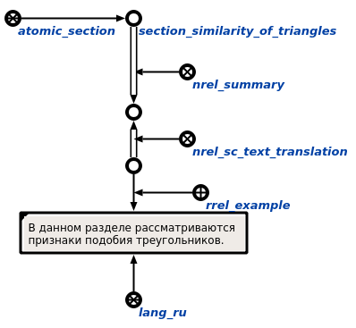

Команда поиска аннотации для заданного раздела предназначена для нахождения аннотации для заданного раздела. Единственным аргументом команды является раздел, для которого необходимо найти аннотацию. Результатом выполнения команды является узел аннотации, найденной для раздела, и цепочка трансляции этой аннотации. В ответ для раздела "Раздел. Подобие треугольников", например, будут добавлены все элементы, указанные в следующем фрагменте БЗ:
